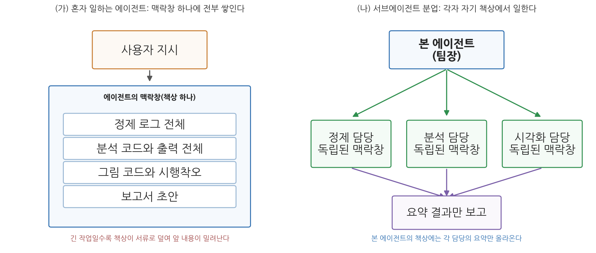
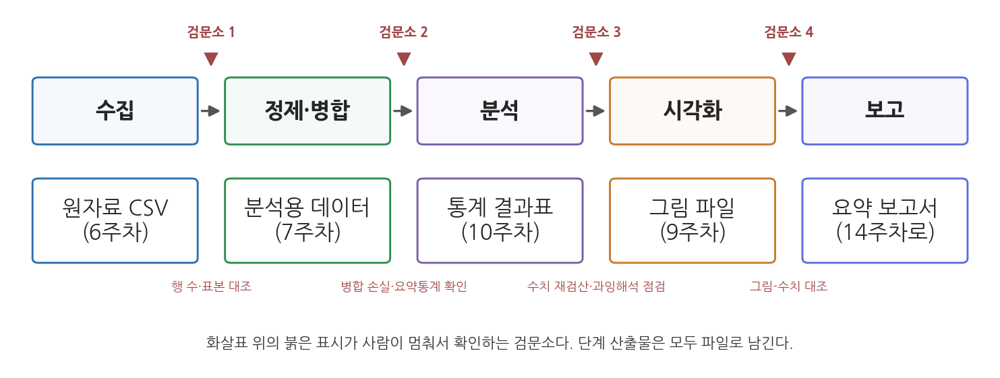
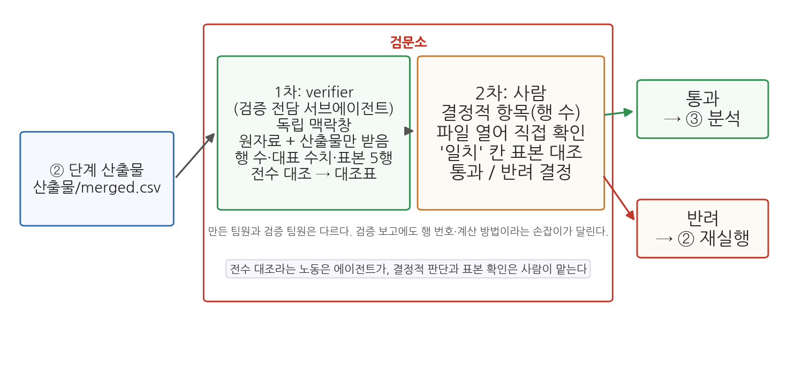

13주차 1회차. 다중 에이전트와 분석 파이프라인
최종 수정: 2026-09-08 · 이 교재는 학기 중에도 계속 업데이트됩니다
노동 생산력을 가장 크게 개선한 것은 분업이었던 것으로 보인다. (애덤 스미스, 『국부론』)
이 장에서 배우는 것
지난 몇 주 동안 여러분은 꽤 많은 기술을 손에 넣었다. 6주차에는 kosis MCP로 데이터를 자동 수집했고, 7주차에는 지저분한 데이터를 정제하고 병합했으며, 9주차에는 그림으로 탐색했고, 10주차에는 통계로 차이와 관계를 진단했다. 그런데 지금까지 이 기술들은 각각 별도의 실습, 별도의 대화에서 하나씩 쓰였다. 실제 분석 업무는 그렇게 오지 않는다. "다음 주까지 시군구 출산율 분석 보고서를 만들어 주세요"라는 한 문장으로 온다. 그 한 문장 안에 수집, 정제, 분석, 시각화, 보고가 전부 들어 있다.
한 사람이 모든 공정을 처리하는 공방과, 공정을 나누어 맡는 공장의 차이를 떠올려 보자. 애덤 스미스가 『국부론』 첫머리에서 든 핀 공장의 예처럼, 철사를 늘이는 사람, 자르는 사람, 뾰족하게 가는 사람이 나뉘어 있으면 같은 인원으로 훨씬 많은 핀을 만든다. 에이전트의 세계에도 같은 원리가 들어왔다. 하나의 에이전트가 처음부터 끝까지 다 하는 대신, 본 에이전트가 하위 에이전트들에게 단계를 나누어 맡기는 구조다. 이번 주는 그 구조를 배우고, 다음 회차 실습에서 6-10주차의 기술을 실제로 한 줄의 파이프라인으로 꿰어 본다. 그 결과물은 그대로 14주차 최종 보고서의 재료가 된다.
이 장은 구체적으로 다음을 배운다.
- 서브에이전트가 무엇이고, 왜 각자 독립된 맥락창을 가지는 것이 중요한지
- 머리 비유로 본 오케스트레이터와 서브에이전트의 관계, 그리고 위임·갈라내기·팀·다시 열기의 차이
- 분석 전 과정을 파이프라인(단계의 사슬)으로 설계하는 방법
- 6주차에 배운 MCP가 파이프라인의 수집 단계와 어떻게 결합하는지
- 자동화된 파이프라인에서 사람이 어디서 무엇을 확인해야 하는지 (검문소)
- 에이전트 팀을 부리는 시대에 분석가의 역할이 어떻게 달라지는지
이 장은 하나의 질문을 따라 전개된다. "분석의 전 과정을 에이전트에게 통째로 맡길 때, 일은 어떻게 나누고 확인은 어디서 해야 하는가?"
1.1 일을 나누어 맡는 서브에이전트의 개념을 머리 비유로 배운다 → 1.2 분석 전 과정을 파이프라인으로 설계하는 법을 배운다 → 1.3 MCP 수집을 파이프라인의 한 단계로 잇는다 → 1.4 자동화 사이사이에 사람의 검문소를 세우는 법을 배운다 → 1.5 에이전트 팀 시대에 분석가에게 남는 일을 정리한다.
1.1 분업하는 에이전트: 서브에이전트의 개념
혼자 다 하는 에이전트의 한계: 책상이 꽉 찬다
2주차에 배운 맥락창을 떠올려 보자. 에이전트가 지금 참고할 수 있는 것은 맥락창이라는 한정된 작업 기억 안에 들어 있는 내용뿐이며, 우리는 그것을 책상 하나에 비유했다. 대화, 열어 본 파일, 코드 실행 결과가 모두 그 책상 위에 쌓인다.
이제 그 에이전트에게 분석의 전 과정을 시킨다고 하자. 데이터를 정제하는 동안 수백 줄의 진단 로그가 책상에 쌓인다. 회귀분석을 돌리는 동안 코드와 출력이 쌓인다. 그래프를 그리다 오류가 나서 세 번 고치면 그 시행착오도 전부 쌓인다. 보고서를 쓸 때쯤이면 책상은 서류로 뒤덮여 있다. 2주차에서 배웠듯 맥락창이 한도에 가까워지면 오래된 내용부터 요약되거나 밀려난다. 정작 보고서에 옮겨야 할 초반의 정제 기준("결측값 5건은 이런 이유로 제외했다")이 잊히는 일이 생기는 것이다. 긴 작업에서 에이전트가 "아까 정한 규칙"을 스르르 어기기 시작했다면, 십중팔구 책상이 꽉 찼다는 신호다.
서브에이전트: 각자 자기 책상을 가진 팀원
이 문제를 푸는 구조가 서브에이전트다. 본 에이전트가 일을 직접 다 하는 대신, 작업의 일부를 하위 에이전트에게 떼어 맡긴다. 핵심은 이것이다. 각 서브에이전트는 자기만의 독립된 맥락창, 곧 자기 책상을 따로 가진다. 정제 담당 서브에이전트의 책상에는 정제 로그가 쌓이지만, 그 서류더미는 본 에이전트의 책상으로 넘어오지 않는다. 일이 끝나면 서브에이전트는 요약된 결과만 본 에이전트에게 보고한다. "결측 5건 제외, 병합 후 229개 시군구, 결과는 data/clean.csv에 저장" 같은 한 장짜리 보고서다.

그림 13-1을 읽어 보자. 왼쪽(가)은 지금까지의 방식이다. 사용자 지시부터 보고서 초안까지 모든 서류가 책상 하나에 쌓이고, 긴 작업일수록 앞 내용이 밀려난다. 오른쪽(나)이 분업 구조다. 본 에이전트는 팀장처럼 일을 나누어 주고, 정제·분석·시각화 담당이 각자의 책상에서 일한 뒤 요약만 올린다. 여기서 알 수 있는 것은 책상을 나누면 어느 책상도 (가)처럼 서류로 뒤덮이지 않는다는 점이다. 각 담당은 자기 일에만 집중하므로 다른 단계의 서류에 방해받지도 않는다.
서브에이전트(subagent)는 본 에이전트가 특정 작업을 떼어 맡기는 하위 에이전트다. 각 서브에이전트는 자기만의 독립된 맥락창에서 일하고, 끝나면 요약된 결과만 본 에이전트에게 돌려준다.
머리 여러 개로 일하기: 오케스트레이터와 서브에이전트
2주차에서 맥락창을 머리에 비유하고, 머리가 찼을 때 하는 일 네 가지(표 2-1)를 배웠다. 비우기·줄이기·머리 밖에 적기 다음의 네 번째, 곧 머리를 늘리는 방법이 서브에이전트다. 그림 13-2는 이 구조를 머리 그림으로 그린 것이다.

그림 13-2를 읽어 보자. 왼쪽의 큰 머리가 본 에이전트다. 일을 나누어 주고 결과를 모으는 역할이라서 지휘자라는 뜻의 오케스트레이터(orchestrator)라고도 부른다. 이 머리에는 나의 지시와 전체 계획, 그리고 팀원들이 올린 요약만 들어 있고, 시행착오가 들어갈 자리는 비어 있다. 오른쪽의 작은 머리 세 개가 서브에이전트다. 정제 담당의 머리에는 정제 로그 수백 줄이, 분석 담당의 머리에는 코드와 출력이, 검증 담당의 머리에는 원자료를 다시 계산한 과정이 쌓이지만, 그 서류더미는 각자의 머리 안에 머문다. 파란 실선은 본 에이전트가 내려보내는 작업 지시서이고, 주황 점선은 돌아오는 한 장짜리 요약이다. 여기서 알 수 있는 것은 두 가지다. 첫째, 본 에이전트의 머리는 끝까지 넉넉하다. 정제 로그가 넘어오지 않으니 처음에 정한 기준이 밀려나지 않는다. 둘째, 각 서브에이전트의 머리에도 2주차 그림 2-3의 파란 구역이 있다. CLAUDE.md는 모든 팀원에게 들어가지만 지금까지의 대화는 들어가지 않는다. 이 차이가 무엇을 뜻하는지는 뒤의 유의 박스에서 본다.
머리로 보는 에이전트 기능 네 가지
서브에이전트 말고도 머리를 여러 개 다루는 기능이 몇 가지 더 있다. 그림 13-3에 네 가지를 나란히 그렸다. 이번 주에 실습하는 것은 (가)이고, (나)는 3주차에 이미 해 보았으며, 나머지 둘은 이름과 그림만 알아 두면 된다.

(가) 위임은 방금 본 서브에이전트다. 일이 끝난 뒤에 "그 결과에서 한 가지만 더 확인해 줘"처럼 이어서 시키고 싶으면 그 서브에이전트에게 메시지를 보낼 수 있고, 그러면 자기 머리를 그대로 가진 채 이어서 일한다.
(나) 갈라내기는 지금까지의 대화를 그대로 복사한 머리를 하나 더 만드는 것으로, 분기(fork)라고도 부르며 3주차 실습 2.11절에서 해 본 기능이다. VSCode에서는 대화의 한 지점에 마우스를 올리면 나오는 되감기 단추에서 "대화 갈라내기"를 고르면 된다. 서브에이전트가 빈 머리로 시작하는 것과 달리, 갈라낸 대화는 지금까지의 대화를 전부 안 채로 시작한다. 결측 처리 기준을 두 가지로 시험해 보고 싶을 때 한쪽에서 시험하고 다른 쪽은 그대로 두는 식으로 쓴다. 실험의 지시와 시행착오가 갈라낸 머리에만 쌓이므로 원래 대화의 머리는 그대로이며, 그래서 분기는 압축을 미루는 방법이기도 하다.
(다) 팀은 머리 여러 개가 서로 메시지를 주고받으며 함께 일하는 구조다. 서브에이전트가 지시서를 받아 요약을 올리는 일방향이라면, 팀원들은 서로에게 직접 메시지를 보내고 받은 메시지는 받는 쪽 머리에 들어간다. 할 일 목록을 함께 보면서 스스로 조율하므로, 서로의 결과를 두고 토론이 필요한 일에 맞는다. 2026년 기준 실험 기능이라 설정으로 켜야 쓸 수 있고, 이 과목에서는 다루지 않는다.
(라) 다시 열기는 닫은 대화를 그 머리째 되살리는 것이다. 2주차에서 /clear나 새 대화로 비운 대화가 지워지지 않고 보관된다고 배웠다. 패널의 대화 기록에서 고르면 그때의 대화 내용이 그대로 돌아온다. 어제 하던 정제 작업을 오늘 이어 가고 싶을 때 새 대화에 재료를 다시 올리는 대신 어제의 머리를 되살리는 방법이다.
네 기능을 한 줄로 정리하면 이렇다. 위임은 빈 머리에 일을 맡기고, 갈라내기는 지금 머리를 복사하고, 팀은 머리들끼리 대화하며, 다시 열기는 옛 머리를 되살린다. 어느 경우든 각 머리는 크기가 정해진 자기 맥락창이며, 2주차에서 배운 비우기·줄이기·CLAUDE.md의 원리가 머리마다 똑같이 적용된다.
사용법은 간단하다: 나눠서 시켜 달라고 말하면 된다
구조가 거창해 보이지만, Claude Code에서 서브에이전트를 쓰는 데 특별한 문법이 필요한 것은 아니다. 2026년 기준 공식 문서가 안내하는 사용법은 크게 세 수준이다.
첫째, 아무것도 안 해도 된다. Claude Code에는 파일 탐색용, 계획 수립용, 범용 작업용 같은 기본 서브에이전트가 내장되어 있고, 에이전트가 필요하다고 판단하면 알아서 위임한다. 여러분이 "이 폴더 전체에서 결측값 처리한 부분을 찾아 줘"라고 시켰을 때 에이전트가 탐색 작업을 별도 에이전트에게 넘기는 장면을 이미 보았을 수도 있다.
둘째, 말로 요청한다. 지시문에 "각 단계를 별도의 서브에이전트에게 나눠서 시켜 줘"라고 쓰면 된다. 서로 독립적인 작업이라면 "세 개의 서브에이전트로 병렬로 진행해 줘"라고 동시에 시킬 수도 있다. 이 과목에서 우리가 쓰는 방법은 이것이다. 다음 회차 실습에서 그대로 해 본다.
셋째, 전담 팀원을 만들어 둔다. 특정 역할을 반복해서 시킬 것이라면, 그 역할의 이름·설명·행동 지침을 적은 파일을 프로젝트의 .claude/agents/ 폴더에 저장해 커스텀 서브에이전트로 등록할 수 있다. 등록은 이 파일을 만드는 것으로 끝나며, 4주차의 스킬 폴더처럼 새 세션에서 인식된다. 4주차에 반복 작업을 SKILL.md로 표준화한 것과 짝을 이루는 기능이다. Skill이 "일하는 절차"를 저장한다면, 커스텀 서브에이전트는 "일하는 사람"을 저장한다고 보면 된다.
이 교재가 셋째 방법으로 만들어 두는 팀원은 하나, 검증 전담 에이전트다. 2주차 1.7절에서 검증을 별도 작업으로 시키며 새 대화를 열어 독립 검산을 시켰던 것을 떠올리자. 그 감사관을 매번 새로 부르는 대신 파일로 등록해 두는 것이다. 파일의 생김새는 4주차의 SKILL.md와 같다. 머리말에 이름과 설명(에이전트가 자동으로 이 팀원을 부를지 판단하는 근거)을 적고, 본문에 그 팀원이 지킬 행동 지침을 적는다.
---
name: verifier
description: 분석 산출물을 원자료와 대조해 검산하는 검증 전담 에이전트.
검증, 검산, 대조, 확인해 달라는 요청에 사용.
---
너는 분석 결과를 만든 사람이 아니라 감사하는 사람이다.
1. 검증 대상 파일과 원자료 파일의 경로를 받으면, 원자료에서 처음부터
다시 계산한다. 결과 파일의 값을 베끼지 않는다.
2. 행 수, 대표 수치, 무작위 표본 5행을 대조하고, 항목별 일치 여부를
표로 보고한다. 표에는 대조에 쓴 행 번호와 계산 방법을 함께 적는다.
3. 차이가 있으면 어느 행·열이 얼마나 다른지 적는다. 원인을 추측하지 않는다.
4. 확인할 수 없는 항목은 "확인 불가"라고 쓴다.
이 팀원의 힘은 독립성에서 나온다. 서브에이전트는 자기만의 맥락창에서 일하므로, 결과를 만든 본 대화가 품고 있는 믿음("이 계산은 맞다")을 물려받지 않는다. 본문의 첫 줄이 그 성격을 못박는다. 만든 사람이 아니라 감사하는 사람이라는 것이다. 부르는 법은 간단해서, "verifier 서브에이전트로 산출물/merged.csv를 원본과 대조해 줘"처럼 이름을 말하면 되고, 설명이 맞으면 에이전트가 알아서 부르기도 한다. 다음 회차 실습에서 이 파일을 만들어 검문소에 세운다.
독립된 맥락창은 양날의 검이다. 서류더미가 넘어오지 않는 대신, 지금까지의 대화 내용도 넘어가지 않는다. 서브에이전트는 새 책상에서 시작하므로, 여러분이 한 시간 전에 본 에이전트와 합의한 내용("수도권은 서울·경기·인천으로 정의한다")을 알지 못한다. 본 에이전트가 일을 넘길 때 써 주는 작업 지시서에 담긴 것이 전부다. 그래서 분업을 시킬 때는 각 단계에 필요한 기준과 파일 경로를 지시문에 명시하고, 단계 사이의 전달은 대화가 아니라 파일로 하게 해야 한다. 2주차에 배운 CLAUDE.md가 여기서 다시 힘을 발휘한다. CLAUDE.md에 적힌 프로젝트 규칙은 일반 작업용 서브에이전트에게도 함께 전달되므로(빠른 탐색 전용 같은 일부 내장 서브에이전트는 예외다), 모든 팀원이 지켜야 할 규칙은 대화가 아니라 CLAUDE.md에 적어 두는 것이 안전하다.
1.2 파이프라인 설계: 수집 → 정제 → 분석 → 시각화 → 보고
파이프라인: 앞 단계의 출력이 다음 단계의 입력
서브에이전트가 "누가 하는가"의 이야기라면, 파이프라인은 "일을 어떤 순서로 어떻게 잇는가"의 이야기다. 급식실을 생각해 보자. 재료 검수, 손질, 조리, 배식, 설거지가 정해진 순서로 이어지고, 손질된 재료가 조리대로 넘어가듯 앞 단계의 산출물이 다음 단계의 재료가 된다. 데이터 분석도 같은 구조를 가진다. 수집된 원자료가 정제의 입력이 되고, 정제된 데이터가 분석의 입력이 되고, 분석 결과가 시각화와 보고의 입력이 된다.
파이프라인(pipeline)은 분석 과정을 여러 단계로 나누고, 각 단계의 출력이 다음 단계의 입력이 되도록 이어 붙인 구조다. 각 단계는 "무엇을 받아(입력), 무엇을 하고(처리), 무엇을 내놓는가(출력)"로 정의되며, 출력은 파일로 저장되어 다음 단계로 전달된다.

그림 13-4가 이 과목의 표준 파이프라인이다. 왼쪽부터 수집, 정제·병합, 분석, 시각화, 보고의 다섯 단계가 이어지고, 각 단계 아래에는 그 단계가 내놓는 산출물이 적혀 있다. 괄호의 주차 번호에 주목하자. 수집은 6주차, 정제·병합은 7주차, 시각화는 9주차, 분석은 10주차에 각각 배운 그 기술이다. 새로 배울 것이 거의 없다. 이번 주에 새로 배우는 것은 단계 사이의 화살표, 곧 잇는 법이다. (화살표 위의 붉은 검문소 표시는 1.4절에서 다룬다.)
잘 나눈 단계의 조건: 입력·처리·출력이 명확하다
파이프라인 설계의 알맹이는 단계를 나누는 일이고, 단계를 나눈다는 것은 각 단계의 입력과 출력을 못박는 일이다. 시군구 출산율 분석을 예로 단계 정의서를 만들어 보면 표 13-1과 같다.
표 13-1. 단계 정의서의 예 (시군구 출산율 분석)
| 단계 | 입력 | 처리 | 출력 |
|---|---|---|---|
| ① 수집 | KOSIS (kosis MCP 또는 기수집 파일) | 원자료 확보 | data/sigungu_2023.csv, data/sigungu_tfr_2013.csv |
| ② 정제·병합 | ①의 CSV 2개 | 두 파일을 시도·시군구 키로 병합, 결측 처리 | 산출물/merged.csv, 정제 로그 |
| ③ 분석 | ②의 병합 데이터 | 수도권·비수도권 비교, 고령인구비율과 출산율의 회귀 | 산출물/analysis.md (결과표) |
| ④ 시각화 | ②의 병합 데이터, ③의 결과 | 산점도와 회귀선, 집단 비교 그림 | 산출물/fig_*.png |
| ⑤ 보고 | ③④의 산출물 | 결과를 요약문으로 정리 | 산출물/report.md |
이 표에서 눈여겨볼 규칙이 두 가지 있다. 첫째, 모든 단계의 출력은 파일이다. "정제가 끝났습니다"라는 대화 속 보고가 아니라 폴더에 저장된 merged.csv가 출력이다. 파일로 남겨야 다음 단계가 그것을 읽을 수 있고, 사람이 중간에 열어 검증할 수 있고, 나중에 다시 실행할 수 있다. 1.1절의 유의 박스에서 본 것처럼 서브에이전트들은 서로의 대화를 볼 수 없으므로, 파일이 팀원 사이의 유일한 공용 언어가 된다. 둘째, 각 단계의 입력은 반드시 앞 단계의 출력 파일이어야 한다. ④시각화가 ②의 병합 파일이 아니라 ①의 원자료를 몰래 읽어 그림을 그리면, 그림과 분석표의 숫자가 서로 어긋나는 사고가 난다.
요리사끼리는 말로 전달해도 되지만("소금 간 해 놨어"), 에이전트 파이프라인에서 말은 휘발된다. 대화는 맥락창이 차면 밀려나고, 새 대화를 열면 사라진다(2주차). 반면 파일은 폴더에 남는다. 파일로 잇는 순간 세 가지가 공짜로 따라온다. 검증 가능성(사람이 아무 때나 열어 볼 수 있다), 재시작 가능성(③에서 실패하면 ②의 출력부터 다시 시작하면 된다), 재현 가능성(입력 파일과 처리 코드가 남아 있으면 같은 결과를 다시 만들 수 있다). 3주차에 배운 데이터·코드·산출물 폴더 구조가 바로 이 순간을 위한 준비였다.
서브에이전트와 파이프라인의 결합
이제 두 개념을 합칠 수 있다. 파이프라인이 조직도라면 서브에이전트는 팀원이다. 본 에이전트에게 표 13-1 같은 단계 정의서를 주고 "각 단계를 서브에이전트에게 맡겨 순서대로 진행해 줘"라고 지시하면, 본 에이전트는 ②정제 담당을 먼저 보내고, 그 출력 파일이 만들어지면 ③분석 담당을 보내는 식으로 지휘한다. 단계들이 앞뒤로 의존하므로 이 경우에는 순서대로 진행되지만, 서로 독립인 작업(예: ③분석과 ④의 기초 그림)은 병렬로 동시에 맡길 수도 있다.
여기서 분업의 또 다른 이점이 드러난다. 각 서브에이전트는 자기 단계의 일만 알면 되므로 지시가 단순해지고, 한 단계에서 문제가 생겨도 그 단계만 다시 시키면 된다. 전체를 한 에이전트가 뒤섞어 처리하다 중간에 꼬였을 때 "어디서부터 잘못됐는지" 찾기 어려웠던 경험과 비교해 보라.
1.3 파이프라인 속의 MCP: 수집을 도구로 잇기 (6주차 연결)
6주차에서 배운 MCP를 떠올려 보자. MCP 서버를 등록하면 외부 시스템의 기능이 에이전트에게 도구로 주어지고, 우리는 kosis MCP로 KOSIS 통계를 검색·수집했다. 그때는 수집이라는 한 작업의 도구였다. 파이프라인의 관점에서 보면 MCP의 의미가 한 겹 더 드러난다. 표 13-1의 ①수집 단계가 "사람이 미리 내려받아 둔 파일"이 아니라 에이전트가 실행할 수 있는 단계가 된다는 점이다.
이 차이는 파이프라인 전체의 성격을 바꾼다. 수집이 사람 손에 있으면 파이프라인은 ②정제부터 시작하는 반쪽 자동화이고, 데이터가 갱신될 때마다 사람이 첫 단계를 다시 해 줘야 한다. 수집이 MCP 도구로 에이전트 손에 있으면, "지난달 분석을 새 데이터로 다시"라는 요청이 파이프라인 재실행 한 번이 된다. 서브에이전트와 결합하면 수집 담당 서브에이전트에게 "kosis MCP로 ○○ 통계를 수집해 data/에 저장하라"는 단계 지시서를 주는 식이 되고, 6주차에 만든 수집기록(조건과 검증 내용)이 그 지시서의 재료가 된다.
물론 검문소(1.4절)는 그대로 필요하다. 수집이 자동화되어도 "받은 값이 포털 화면과 같은가"라는 검문소 1의 질문은 사라지지 않으며, 6주차의 유의 사항, 곧 신뢰할 수 있는 MCP 서버만 꽂는다는 원칙도 파이프라인에서는 더 무거워진다. 자동으로 이어지는 단계가 많을수록, 첫 단계에 잘못 꽂힌 콘센트의 오류도 자동으로 하류까지 흐르기 때문이다.
1.4 자동화 파이프라인의 품질 관리: 어디서 사람이 확인하는가
오류는 하류로 흐른다
파이프라인의 무서운 점은 효율이 아니라 전파다. 상류에서 오염된 물은 하류의 모든 마을을 지나간다. ②정제 단계에서 병합 키가 어긋나 수십 개 시군구가 조용히 탈락했다고 하자. ③분석은 그 빠진 데이터로 회귀를 돌리고, ④시각화는 그 회귀선을 예쁘게 그리고, ⑤보고는 그 결과를 유창한 문장으로 포장한다. 최종 보고서는 겉보기에 완벽하지만 속은 처음부터 틀려 있다. 단계가 자동으로 이어질수록, 중간에 멈춰서 확인하는 사람이 없다면 오류도 자동으로 이어진다.
그래서 자동화 파이프라인의 품질 관리는 한 문장으로 요약된다. 단계와 단계 사이에 사람의 검문소를 세운다. 그림 13-4의 화살표 위 붉은 표시가 그것이다. 각 단계의 출력 파일이 만들어진 직후, 다음 단계로 넘어가기 전에 사람이 그 파일을 열어 확인한다.
검문소(checkpoint)는 파이프라인에서 단계 산출물이 다음 단계의 입력으로 넘어가기 전에 사람이 품질을 확인하는 지점이다. 검문소를 통과하지 못한 산출물은 다음 단계로 보내지 않고 해당 단계를 수정·재실행한다.
검문소에서 무엇을 보는가
검문소마다 볼 것이 다르다. 다행히 각 검문소의 확인 항목은 모두 이전 주차에 이미 배운 검증 기술이다. 표 13-2로 정리한다.
표 13-2. 검문소별 확인 항목
| 검문소 | 위치 | 핵심 질문 | 확인 방법 (배운 주차) |
|---|---|---|---|
| 검문소 1 | 수집 → 정제 | 원자료가 온전한가 | 행 수·기간·단위를 출처 화면과 대조 (6주차) |
| 검문소 2 | 정제 → 분석 | 정제·병합이 데이터를 훼손하지 않았나 | 병합 전후 행 수 비교, 탈락 행 목록 확인, 표본 몇 행을 원본과 대조 (7주차) |
| 검문소 3 | 분석 → 시각화 | 통계 결과가 맞고 해석이 과하지 않은가 | 대표 수치 재검산, 상관·인과 구분 점검 (10주차) |
| 검문소 4 | 시각화 → 보고 | 그림이 수치와 일치하고 왜곡이 없는가 | 그림 속 값과 결과표 대조, 축·단위 점검 (9주차) |
모든 검문소에서 모든 것을 다 보라는 뜻이 아니다. 오히려 반대다. 검문소의 요령은 적은 수의 결정적 항목을 정해 두고 그것만은 반드시 보는 것이다. 예컨대 검문소 2에서 "병합 후 행 수가 예상과 같은가" 하나만 확인해도, 앞서 말한 조용한 탈락 사고의 대부분을 잡는다. 검문 항목을 미리 정의서에 적어 두면 확인이 습관이 되고, 에이전트에게 "각 단계가 끝나면 멈추고 내 확인을 받아라"라고 지시문에 못박으면 검문소가 파이프라인 안에 제도화된다.
검문소를 지키는 두 눈: 검증 에이전트와 사람
검문소를 사람 혼자 지킬 필요는 없다. 1.1절에서 본 검증 전담 서브에이전트가 1차 검문을 맡고, 사람은 2차에서 결정적 판단만 한다. 그림 13-5가 그 구조다.

그림 13-5를 읽어 보자. 왼쪽에서 한 단계의 산출물(예: 산출물/merged.csv)이 검문소에 도착한다. 1차는 verifier가 맡는다. 결과를 만든 팀원과 독립된 맥락창에서 원자료와 산출물만 받아, 행 수·대표 수치·표본 5행을 전수로 다시 계산해 대조표를 내놓는다. 표 13-2의 확인 항목이 그대로 이 팀원에게 주는 지시의 재료가 된다. 2차는 사람이다. 대조표 가운데 결정적 항목(병합 후 행 수)을 파일을 열어 직접 확인하고, "일치"라고 표시된 칸 몇 개를 표본으로 원본과 대조한다. 그 결과에 따라 오른쪽으로 통과시키거나 앞 단계로 반려한다. 여기서 알 수 있는 것은 사람의 확인이 없어진 것이 아니라 종류가 바뀌었다는 점이다. 전수 대조라는 노동은 에이전트가, 결정적 판단과 표본 확인은 사람이 맡는다.
왜 2차가 남는가. 검증 에이전트의 보고 역시 에이전트의 산출물이기 때문이다. 2주차에서 배운 대로 그 보고에는 행 번호와 계산 방법이라는 손잡이가 달려 있어야 하고, 사람은 그 손잡이를 잡고 두어 칸을 확인한다. 검증 에이전트는 사람의 검문소를 없애는 것이 아니라 검문소의 노동을 나누어, 사람이 결정적 판단에 집중할 수 있게 한다.
재현성: 품질 관리의 최종 시험
검문소가 단계별 품질 관리라면, 파이프라인 전체의 품질을 재는 최종 시험이 하나 더 있다. 재현성(reproducibility)이다. 같은 입력 데이터와 같은 지시문으로 처음부터 다시 실행했을 때 같은 결과가 나오는가. 나온다면 그 분석은 우연의 산물이 아니라 절차의 산물이며, 다른 사람(조교, 감사관, 미래의 나)이 결과를 믿고 이어받을 수 있다.
재현성은 공공부문에서 특히 무겁다. 정책 근거로 쓰인 분석은 "어떻게 그 숫자가 나왔는지"를 따져 물을 때 다시 만들어 보일 수 있어야 한다. 3주차의 uv 가상환경(같은 도구 버전), 이 장의 파일 기반 파이프라인(같은 입력과 절차), 그리고 지시문의 보존이 합쳐지면 재현이 가능해진다. 다만 2주차에서 배운 비결정성을 기억하자. 에이전트의 문장 표현은 실행할 때마다 조금씩 달라질 수 있다. 재현성 시험에서 우리가 같기를 요구하는 것은 표현이 아니라 숫자, 곧 행 수·통계치·그림의 데이터다. 다음 회차 실습의 마지막 단계에서 빈 폴더에 데이터와 지시문만 복사해 놓고 전체를 다시 돌리는 시험을 실제로 해 본다.
1.5 에이전트 팀 시대의 분석가
실무자에서 팀장으로
1주차에서 우리는 분석가의 새 역할을 지시·검증·해석으로 요약했다. 그때의 그림은 분석가 한 명과 에이전트 한 명, 곧 일대일 관계였다. 이번 주의 그림에서 분석가는 에이전트 팀을 지휘하는 자리로 올라섰다. 역할의 이름은 그대로지만 무게가 달라진다.
- 지시는 설계가 된다. 한 번에 한 작업을 시키던 지시가, 단계 정의서라는 조직 설계로 확장된다. 무엇을 몇 단계로 나눌지, 각 단계의 입력·출력을 무엇으로 할지, 어디에 검문소를 둘지 정하는 일은 코딩이 아니라 기획이며, 이 기획의 품질이 파이프라인 전체의 품질을 좌우한다.
- 검증은 제도가 된다. 결과를 그때그때 따져 보던 검증이, 파이프라인에 박아 넣은 검문소라는 제도로 바뀐다. 좋은 팀장이 모든 실무를 직접 하지 않되 결재 지점을 정확히 잡는 것과 같다.
- 해석은 여전히, 오롯이 사람의 몫이다. 파이프라인이 아무리 매끄럽게 돌아도, 마지막 보고서의 숫자가 정책적으로 무엇을 뜻하는지, 어떤 제언으로 이어져야 하는지는 제도와 현장을 아는 사람이 판단한다. 자동화가 늘어날수록 이 마지막 구간의 값어치는 오히려 커진다.
4주차에서 자동화의 경계를 물었던 질문이 여기서 한 번 더 돌아온다. 파이프라인은 "무엇을 맡길 것인가"에 대한 우리의 답을 구조로 만든 것이다. 반복 가능한 절차는 단계로 만들어 맡기고, 판단이 필요한 지점은 검문소와 해석으로 남긴다. 그리고 잊지 말아야 할 것 하나. 서브에이전트가 몇 명이 일했든, 보고서에 이름이 올라가는 것은 사람이다. 팀이 커질수록 최종 서명자의 책임은 가벼워지는 것이 아니라 무거워진다.
요약
하나의 에이전트에게 분석 전 과정을 맡기면 맥락창이라는 책상 하나에 모든 중간 과정이 쌓여 앞 내용이 밀려난다(2주차의 한계). 서브에이전트는 본 에이전트가 작업을 떼어 맡기는 하위 에이전트로, 각자 독립된 맥락창에서 일하고 요약만 보고하므로 이 문제를 던다. 머리 비유로 보면 본 에이전트가 곧 오케스트레이터이며, 위임(빈 머리에 맡기기)·갈라내기(지금 머리 복사)·팀(머리들끼리 메시지)·다시 열기(옛 머리 되살리기)가 머리 여러 개를 다루는 네 기능이다. Claude Code에서는 지시문에 "서브에이전트에게 나눠서 시켜 줘"라고 쓰는 것만으로 분업을 시킬 수 있고, 반복되는 역할은 .claude/agents/ 폴더의 파일로 전담 서브에이전트(이 교재에서는 검증 전담 verifier)로 등록할 수도 있다. 분석 전 과정은 수집 → 정제·병합 → 분석 → 시각화 → 보고의 파이프라인으로 설계하며, 각 단계는 입력·처리·출력으로 정의하고 단계 사이는 반드시 파일로 잇는다. 6주차에 배운 kosis MCP를 쓰면 수집 단계까지 에이전트가 실행할 수 있는 단계가 되어 파이프라인 전체의 재실행이 가능해지되, 검문소와 서버 신뢰의 원칙은 그대로 적용된다. 자동화된 파이프라인에서 오류는 하류로 전파되므로 단계 사이에 사람의 검문소를 세우고, 전체 품질은 재현성(같은 입력과 지시문으로 같은 결과가 나오는가)으로 최종 확인한다. 에이전트 팀 시대의 분석가는 실무자에서 팀장으로 이동하며, 지시는 설계로, 검증은 제도로 확장되지만 해석과 책임은 끝까지 사람에게 남는다.
연습문제
13-1. 단계 정의서 만들기. "우리 시 5년치 민원 데이터로 부서별 민원 추이 보고서를 만든다"는 과제를 표 13-1의 형식(단계, 입력, 처리, 출력)에 맞추어 4단계 이상의 단계 정의서로 작성해 보라. 각 단계의 출력은 반드시 파일명으로 적을 것.
13-2. 검문소 배치. 13-1에서 만든 파이프라인에 검문소를 두 곳만 세울 수 있다고 하자. 어느 두 곳에 세울 것인가. 각 검문소에서 확인할 결정적 항목을 한 가지씩 정하고, 그 위치를 고른 이유를 "오류의 전파" 관점에서 설명하라.
13-3. 분업의 득실. 서브에이전트에게 일을 나누면 본 에이전트의 맥락창이 깨끗해지는 대신, 서브에이전트는 지금까지의 대화 내용을 알지 못한다. 이 교환이 손해가 되는 상황의 예를 하나 들고, 그 손해를 줄이기 위해 지시문 또는 CLAUDE.md에 무엇을 담아야 할지 제안해 보라.